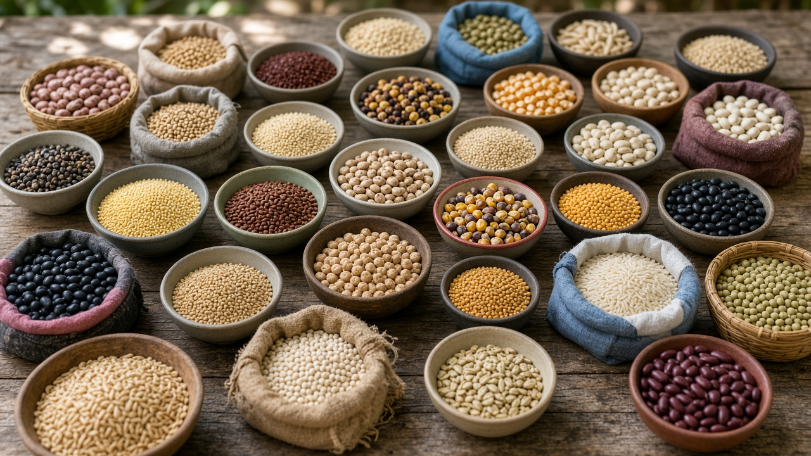
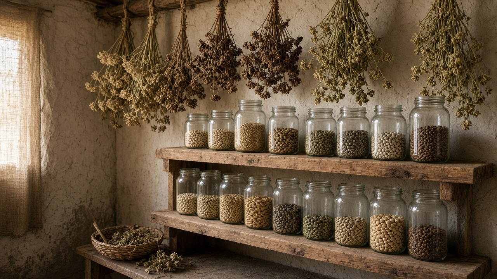
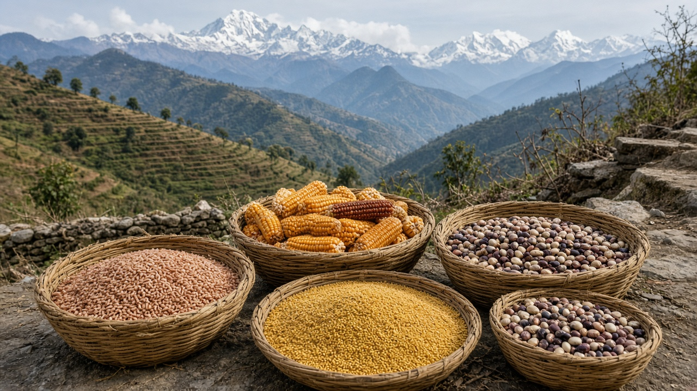

Seed Sovereignty and Crop Diversity
Published on August 20, 2026

Seed sovereignty protects the rights and capacity of farmers, communities, and nations to save, exchange, breed, and choose the seeds that feed them. Industrial agriculture has narrowed dependence on a handful of high-yield commercial varieties, eroding the genetic diversity of locally adapted crops cultivated over centuries. Crop diversity buffers food systems against pests, diseases, and climate variability; when one variety fails, others can sustain production and nutrition. Defending seed sovereignty honors traditional knowledge, resists patent restrictions that criminalize seed saving, and keeps agricultural biodiversity alive in fields rather than only in gene banks.
Community seed banks, farmer field schools, and participatory plant breeding reconnect growers with varieties suited to local soils, altitudes, and cultural tastes. Heirloom grains, indigenous vegetables, and landrace fruits often tolerate drought, flooding, or poor fertility better than uniform hybrids designed for ideal conditions. International treaties recognize farmers' rights to protect and use plant genetic resources, yet corporate consolidation and restrictive seed laws threaten these freedoms in many countries. Public gene banks and on-farm conservation complement each other when access and benefit-sharing agreements respect origin communities.
Policy reforms can exempt smallholders from seed-certification fees, support community exchanges, and fund research on underutilized crops. Consumers strengthen diversity by buying heritage varieties and asking retailers to stock locally bred seeds. Schools and botanical gardens can teach seed saving as a practical skill linking ecology, culture, and food security. Seed fairs and exchange festivals celebrate local varieties while documenting traits such as drought tolerance and cooking quality for future breeding programs. By valuing crop diversity as living heritage rather than disposable input, societies build resilient agriculture that adapts to change while preserving the ingenuity of generations who selected seeds before us.

बीउ स्वशासनले किसान, समुदाय र राष्टहरूलाई बीउ बचत, साटासाट, सुधार र छनोट गर्ने अधिकार र क्षमता संरक्षण गर्छ। औद्योगिक कृषिले थोरै संख्याका उच्च उपज दिने व्यावसायिक जातमा निर्भरता बढाएको छ, जसले शताब्दीयौंसम्म स्थानीय रूपमा अनुकूल बालीको आनुवंशिक विविधता घटाएको छ। बाली विविधताले कीरा, रोग र जलवायु परिवर्तनप्रति खाद्य प्रणालीलाई लचिलो सुरक्षा दिन्छ; एक जात असफल हुँदा अरूले उत्पादन र पोषण जारी राख्न सक्छन्। बीउ स्वशासनले परम्परागत ज्ञानको सम्मान गर्छ, बीउ बचतलाई अपराध बनाउने पेटेन्ट प्रतिबन्धको विरोध गर्छ, र कृषि जैविक विविधतालाई खेतमा जीवित राख्छ, जेन बैंकमा मात्र होइन।
सामुदायिक बीउ बैंक, किसान क्षेत्र विद्यालय र सहभागितामूलक बाली सुधारले उत्पादकलाई स्थानीय माटो, उचाइ र सांस्कृतिक स्वाद अनुकूल जातसँग पुन: जोड्छ। परम्परागत अनाज, स्वदेशी तरकारी र स्थानीय फल प्रायः खडेरी, बाढी वा कम उर्वरतामा एकरूप संकरभन्दा बढी सहनशील हुन्छ। अन्तर्राष्ट्रिय सन्धिहरूले किसानको बोट आनुवंशिक स्रोत संरक्षण र प्रयोग गर्ने अधिकार स्वीकार गर्छन्, तर ठूला कम्पनीको एकीकरण र प्रतिबन्धात्मक बीउ कानूनले धेरै देशमा यी स्वतन्त्रताहरूलाई खतरामा पार्छ। सार्वजनिक जेन बैंक र खेत-मा संरक्षण एकअर्कालाई पूरक बन्छन् जब पहुँच र लाभ-बाँडफाँड सम्झौताले उत्पत्ति समुदायको सम्मान गर्छ।
नीति सुधारले साना किसानलाई बीउ प्रमाणीकरण शुल्कबाट छुट, सामुदायिक साटासाट समर्थन र कम प्रयोग हुने बाली अनुसन्धानमा धन दिन सक्छ। उपभोक्ताले परम्परागत जात खरिद र स्थानीय बीउ राख्ने माग गरेर विविधता बलियो बनाउँछन्। विद्यालय र वनस्पति उद्यानले बीउ बचतलाई पारिस्थितिकी, संस्कृति र खाद्य सुरक्षा जोड्ने व्यावहारिक कौशल सिकाउन सक्छ। बीउ मेला र साटासाट उत्सवले स्थानीय जात उत्सव मनाउँदै खडेरी सहनशीलता र पकाउने गुणस्तार जस्ता विशेषता दर्ता गर्छ, भविष्यका सुधार कार्यक्रमका लागि। बाली विविधतालाई एक पटक प्रयोग हुने सामग्री होइन जीवित धरोहर मानेर, समाजले परिवर्तन अनुकूल लचिलो कृषि बनाउँछ जसले अघिल्लो पुस्ताले छनोट गरेका बीउको चतुराई संरक्षण गर्छ।

बीज स्वशासन किसान, समुदाय और राष्ट्रों को बीज बचत, आदान-प्रदान, सुधार और चुनने के अधिकार और क्षमता की रक्षा करता है। औद्योगिक कृषि ने थोड़ी संख्या में उच्च उपज वाली वाणिज्यिक किस्मों पर निर्भरता बढ़ाई, सदियों से स्थानीय अनुकूल फसलों की आनुवंशिक विविधता घटाई। फसल विविधता कीट, रोग और जलवायु परिवर्तन के प्रति खाद्य प्रणाली को लचीला सुरक्षा देती है; एक किस्म असफल होने पर दूसरी उत्पादन और पोषण जारी रख सकती है। बीज स्वशासन पारंपरिक ज्ञान का सम्मान करके बीज बचत को अपराध बनाने वाले पेटेंट प्रतिबंध का विरोध करता है और कृषि जैव विविधता को खेत में जीवित रखता है, जीन बैंक में ही नहीं।
सामुदायिक बीज बैंक, किसान क्षेत्र विद्यालय और सहभागितापूर्ण फसल सुधार कृषकों को स्थानीय मिट्टी, ऊँचाई और सांस्कृतिक स्वाद अनुकूल किस्मों से पुन: जोड़ते हैं। पारंपरिक अनाज, देसी सब्ज़ियाँ और स्थानीय फल अक्सर सूखे, बाढ़ या कम उर्वरता में एकरूप संकर से अधिक सहनशील होते हैं। अंतर्राष्ट्रीय संधियाँ किसानों के पौध आनुवंशिक संसाधनों की रक्षा और उपयोग के अधिकार स्वीकार करती हैं, फिर भी बड़ी कंपनियों का एकीकरण और प्रतिबंधात्मक बीज कानून कई देशों में ये स्वतंत्रताएँ खतरे में डालते हैं। सार्वजनिक जीन बैंक और खेत संरक्षण एक-दूसरे को पूरक करते हैं जब पहुँच और लाभ-साझेदारी समझौते उत्पत्ति समुदाय का सम्मान करें।
नीति सुधार छोटे किसानों को बीज प्रमाणीकरण शुल्क से छूट, सामुदायिक आदान-प्रदान समर्थन और कम उपयोग फसल अनुसंधान को धन दे सकती है। उपभोक्ता विरासत किस्म खरीद और स्थानीय बीज रखने की माँग से विविधता मजबूत करते हैं। स्कूल और वनस्पति उद्यान बीज बचत को पारिस्थितिकी, संस्कृति और खाद्य सुरक्षा जोड़ने वाला व्यावहारिक कौशल सिखा सकते हैं। बीज मेले और आदान-प्रदान उत्सव स्थानीय किस्मों का उत्सव मनाते हुए सूखा सहनशीलता और पकाने की गुणवत्ता जैसे गुण दर्ज करते हैं, भविष्य के सुधार कार्यक्रम के लिए। फसल विविधता को एक बार प्रयोग सामग्री नहीं जीवित विरासत मानकर, समाज परिवर्तन अनुकूल लचीला कृषि बनाता है जो पिछली पीढ़ियों द्वारा चुने गए बीज की चतुराई को सुरक्षित रखता है।